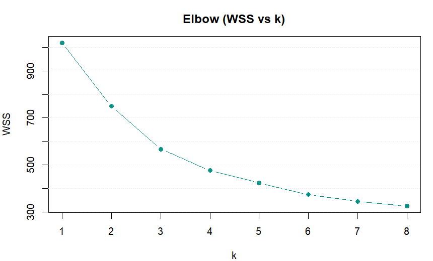
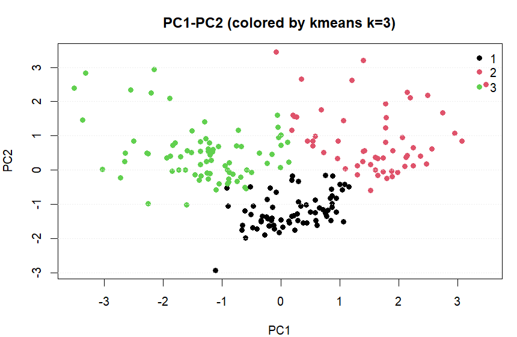

聚类与降维
本练习使用
MASS::Melanoma 的数值变量进行标准化、K-means 聚类与 PCA 降维；输出簇大小、肘部法曲线，以及 PC1/PC2 的二维表示。
0. 载入 Melanoma
0.1 载入数据
options(repos = c(CRAN = "https://mirrors.tuna.tsinghua.edu.cn/CRAN/"))
if (!requireNamespace("MASS", quietly = TRUE)) install.packages("MASS")
library(MASS)
data(Melanoma)
mel = as.data.frame(Melanoma)1. 标准化与距离
变量选择：这里只用数值列做无监督分析（连续/0-1 变量混合时仍建议标准化）。
Step 1 / 选择数值列并标准化
num_cols = c("time", "age", "thickness", "ulcer", "year")
X = mel[, num_cols]
Xz = scale(X)
Xz = Xz[complete.cases(Xz), ]Step 2 / 距离矩阵（欧氏距离）
D = dist(Xz)
D2. K-means 聚类
2.1 拟合与簇大小
Step 3 / K-means（示例：k=3）
set.seed(123)
km3 = kmeans(Xz, centers = 3, nstart = 25)
table(km3$cluster)
km3$centers2.2 肘部法选 k
Step 4 / 计算不同 k 的 WSS 并作图
set.seed(123)
wss = sapply(1:8, function(k) kmeans(Xz, centers = k, nstart = 10)$tot.withinss)
plot(1:8, wss, type = "b", xlab = "k", ylab = "WSS", main = "Elbow (WSS vs k)")
3. PCA 与二维可视化
3.1 主成分解释度
Step 5 / PCA 与解释度
pc = prcomp(Xz, center = TRUE, scale. = FALSE)
summary(pc)3.2 PC1-PC2 散点图
Step 6 / 用聚类标签着色（示例：k=3）
Z = pc$x[, 1:2]
plot(Z, col = km3$cluster, pch = 19,
xlab = "PC1", ylab = "PC2",
main = "PC1-PC2 (colored by kmeans k=3)")
legend("topright", legend = sort(unique(km3$cluster)),
col = sort(unique(km3$cluster)), pch = 19, bty = "n")
4. 实验内容（提交要求）
提交要求：按下列条目给出相应输出与简要说明。
A. K-means
- 簇大小：提交
table(km3$cluster)输出。 - 选 k：提交图 1，并用一句话说明你认为“肘部”大致出现在什么 k。
B. PCA
- 解释度：提交
summary(pc)中 PC1/PC2 的解释方差比例（关键行即可）。 - 二维图：提交图 2，并用一句话描述“不同簇在 PC1/PC2 上是否可分”。